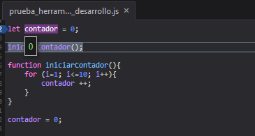
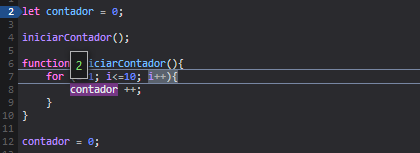
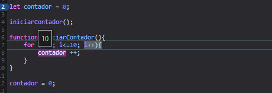
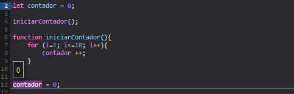

El debugger también nos permite ver que valor toman las variables en cada momento, de esta forma sabemos mejor qué es lo que está ocurriendo en cada momento durante la depuración, para ello colocamos el ratón sobre la variable y aparecerá una pequeña ventanita con el valor de la variable.
En el ejemplo podemos ver como el valor inicial de la variable contador es 0:

Conforme avanza la depuración podemos comprobar que el valor de la variable contador se actualiza al aumentar en el bucle:

Al aumentar hasta 10 sale del bucle:

Al salir se reinicia el contador y podemos comprobar que el valor de la variable vuelve a ser 0:
